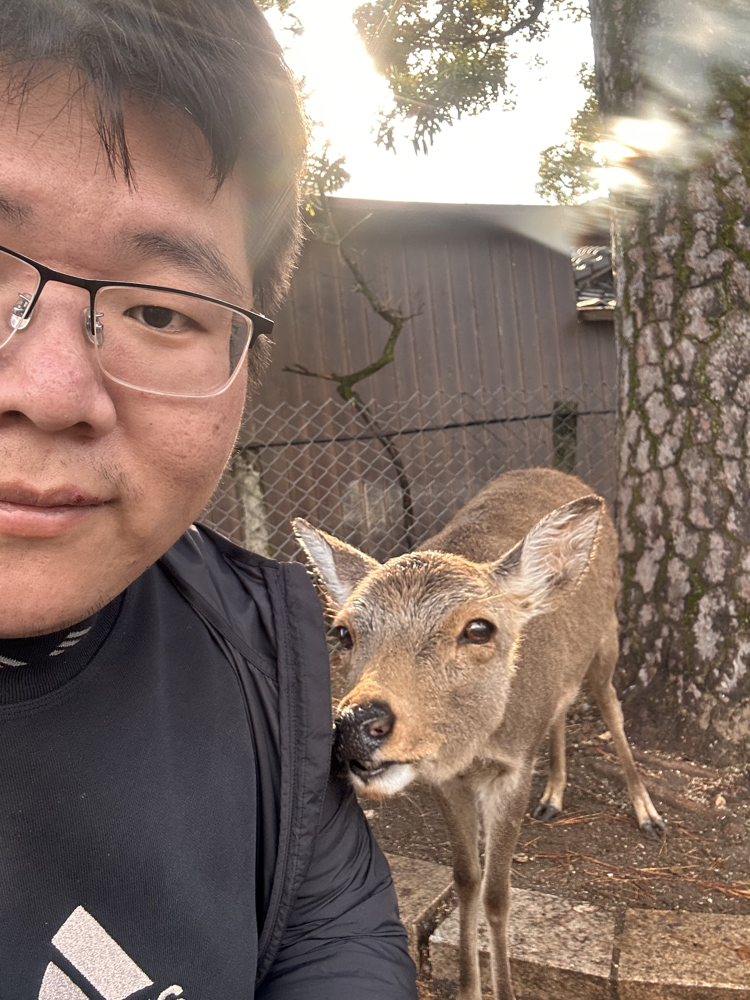

|  | I am currently a Research Fellow at National Institute of Informatics, working in the Trustworthy & Smart Software Engineering Lab led by Prof. Fuyuki ISHIKAWA. Before that, I received my PhD from Department of Information Science and Electrical Engineering (ISEE), Kyushu University. My supervisor was Prof. Jianjun Zhao, and I was co-advised by Prof. Paolo Arcaini and Prof. Zhenya Zhang. My research interests mainly focus on quality assurance of AI-enabled cyber-physical systems (AI-enabled CPSs). Research Interests (including but not limited to):
I am eager to exchange ideas and explore collaborations with researchers who share these interests. I am also seeking new research and career opportunities. Email: lyudeyun@nii.ac.jp |
at Nara, Japan. (Nov 25, 2025)
[2025-11-25] Give an invited talk on my PhD dissertation at the IPSJ/SIGSE 221st Software Engineering Research Symposium.
[2025-11-18] Give a presentation of our work SpectAcle at the Journal-First Track, ASE 2025.
[2025-11-16] Give a presentation of our work ContrRep at the Hot-off-the-Press Track, SSBSE 2025.
[2025-08-05] Honored with the 2025 Distinguished Research Award from IPSJ/SIGSE (2025年度情報処理学会ソフトウェア工学研究会卓越研究賞).
[2025-06-27] My PhD dissertation “Quality Assurance of AI-Enabled Cyber-Physical Systems” was selected for the 2025 IPSJ Doctoral Dissertation Recommendation.
[2025-04-23] “Fault Localization of AI-Enabled Cyber-Physical Systems by Exploiting Temporal Neuron Activation” is accepted at JSS 2025.
[2025-04-15] Join NII as a Research Fellow.
[2025-03-05] “Automated Generation of Benchmarks for Falsification of STL Specifications” is accepted at TCAD 2025.
[2024-11-03] “SpectAcle: Fault Localisation of AI-Enabled CPS by Exploiting Sequences of DNN Controller Inferences” is accepted at TOSEM 2024.
[2024-09-11] Give an oral presentation at the Top Conference/Journal Special Talk (トップカンファレンス・トップ論文誌特別講演), JSSST 2024.
[2024-06-13] Join AAAI 2025 as a PC Member.
[2024-03-22] “Search-Based Repair of DNN Controllers of AI-Enabled Cyber-Physical Systems Guided by System-Level Specifications” is accepted at GECCO 2024.
[2023-09-18] Join the National Institute of Informatics for a six-month research internship, supervised by Prof. Fuyuki ISHIKAWA and Paolo Arcaini.
[2023-07-13] Join AAAI 2024 as a PC Member.
[2023-02-08] “FalsifAI: Falsification of AI-Enabled Hybrid Control Systems Guided by Time-Aware Coverage Criteria” is accepted at ICSE 2023 as Journal-First Paper.
[2022-12-22] “Towards Building Reliable AI-Enabled Cyber-Physical Systems” is accepted at the Doctoral Symposium, FM 2023.
[2022-08-31] Give a poster presentation at the Demo/Poster Session (デモ・ポスターセッション), JSSST 2022.
[2022-08-10] Join AAAI 2023 as a PC Member.
[2022-07-21] “FalsifAI: Falsification of AI-Enabled Hybrid Control Systems Guided by Time-Aware Coverage Criteria” is accepted at TSE 2022.
[2022-01-11] “When Cyber-Physical Systems Meet AI: A Benchmark, an Evaluation, and a Way Forward” is accepted at ICSE SEIP 2022.
[2022-01-08] “An Verification Framework for Behavioral Safety of Self-Driving Cars” is accepted at IET Intelligent Transport System 2022.
[2021-08-20] “Time-Aware Coverage Criteria for Testing of AI-Enabled Hybrid Control Systems” is accepted at ASE LBR 2021.
[2021-04-20] “SDLV: Verification of Steering Angle Safety for Self-Driving Cars” is accepted at FAC 2021.
[2021-04-18] “Effective Hybrid System Falsification Using Monte Carlo Tree Search Guided by QB-Robustness” is accepted at CAV 2021.
[2021-02-24] “On the Effectiveness of Signal Rescaling in Hybrid System Falsification” is accepted at NFM 2021.
Research Fellow at National Institute of Informatics, Apr. 2025 - Present
Ph.D. in Advanced Information Technology, Kyushu University, Oct. 2020 - Mar. 2025
M.S. in Software Engineering, Dalian University of Technology, Sept. 2018 - Jun. 2020
B.S. in Network Engineering, Dalian University of Technology, Sept. 2014 - Jun. 2018
Search-Based Repair of DNN Controllers of AI-Enabled Cyber-Physical Systems Guided by System-Level Specifications [PDF] [Code]
Deyun Lyu, Zhenya Zhang, Paolo Arcaini, Fuyuki Ishikawa, Thomas Laurent, Jianjun Zhao
The Genetic and Evolutionary Computation Conference (GECCO 2024)
When Cyber-Physical Systems Meet AI: A Benchmark, an Evaluation, and a Way Forward
(SEIP - Software Engineering in Practice)
Jiayang Song†, Deyun Lyu†, Zhenya Zhang, Zhijie Wang, Tianyi Zhang, Lei Ma
The 44th International Conference on Software Engineering (ICSE-SEIP 2022)
Effective Hybrid System Falsification Using Monte Carlo Tree Search Guided by QB-Robustness
Zhenya Zhang, Deyun Lyu, Paolo Arcaini, Lei Ma, Ichiro Hasuo, Jianjun Zhao
The 33th International Conference on Computer-Aided Verification (CAV 2021)
On the Effectiveness of Signal Rescaling in Hybrid System Falsification [Code]
Zhenya Zhang, Deyun Lyu, Paolo Arcaini, Lei Ma, Ichiro Hasuo, Jianjun Zhao
The 13th NASA Formal Methods Symposium (NFM 2021)
Fault Localization of AI-Enabled Cyber-Physical Systems by Exploiting Temporal Neuron Activation [PDF]
Deyun Lyu, Yi Li, Zhenya Zhang, Paolo Arcaini, Xiao-Yi Zhang, Fuyuki Ishikawa, Jianjun Zhao
Journal of Systems and Software, 2025.
Automated Generation of Benchmarks for Falsification of STL Specifications
Yipei Yan, Deyun Lyu, Zhenya Zhang, Paolo Arcaini, Jianjun Zhao
IEEE Transactions on Computer-Aided Design of Integrated Circuits and Systems, 2025.
SpectAcle: Fault Localisation of AI-Enabled CPS by Exploiting Sequences of DNN Controller Inferences [PDF]
Deyun Lyu, Zhenya Zhang, Paolo Arcaini, Xiao-Yi Zhang, Fuyuki Ishikawa, Jianjun Zhao
ACM Transactions on Software Engineering and Methodology, 2024.
FalsifAI: Falsification of AI-Enabled Hybrid Control Systems Guided by Time-Aware Coverage Criteria
Zhenya Zhang, Deyun Lyu, Paolo Arcaini, Lei Ma, Ichiro Hasuo, Jianjun Zhao
IEEE Transactions on Software Engineering, 2023.
An Verification Framework for Behavioral Safety of Self-Driving Cars [PDF]
Huihui Wu, Deyun Lyu, Yanan Zhang, Gang Hou, Masahiko Watanabe, Jie Wang, Weiqiang Kong
IET Intelligent Transport Systems, 2022.
SDLV: Verification of Steering Angle Safety for Self-Driving Cars [PDF]
Huihui Wu, Deyun Lyu, Tengxiang Cui, Gang Hou, Masahiko Watanabe, Weiqiang Kong
Formal Aspects of Computing, 2021.
Quality Assurance of AI-Enabled Cyber-Physical Systems
The IPSJ/SIGSE 221st Software Engineering Research Symposium (第221回ソフトウェア工学研究発表会), Todaiji Temple, Nara, Japan, Nov. 2025.
SpectAcle: Fault Localisation of AI-Enabled CPS by Exploiting Sequences of DNN Controller Inferences
ASE 2025 (Journal-First Track), Seoul, South Korea, Nov. 2025.
SSBSE Summary of Search-Based Repair of DNN Controllers of AI-Enabled Cyber-Physical Systems Guided by System-Level Specifications
SSBSE 2025 (Hot-off-the-Press Track), Seoul, South Korea, Nov. 2025.
SpectAcle: Fault Localisation of AI-Enabled CPS by Exploiting Sequences of DNN Controller Inferences
IPSJ/SIGSE Software Engineering Symposium (ソフトウェアエンジニアリングシンポジウム 2025), Waseda University, Tokyo, Japan, Sept. 2025.
Search-Based Repair of DNN Controllers of AI-Enabled Cyber-Physical Systems Guided by System-Level Specifications [PDF]
Top Conference/Journal Special Talk (トップカンファレンス・トップ論文誌特別講演), 41st Annual Conference of the Japan Society for Software Science and Technology (日本ソフトウェア科学会第 41 回大会), Ritsumeikan University, Osaka, Japan, Sept. 2024.
FalsifAI: Falsification of AI-Enabled Hybrid Control Systems Guided by Time-Aware Coverage Criteria [PDF]
Demo/Poster Session (デモ・ポスターセッション), 39th Annual Conference of the Japan Society for Software Science and Technology (日本ソフトウェア科学会第39回大会), Nanzan University, Nagoya, Japan, Sept. 2022.
Method for Adaptively Detecting Chessboard Sub-Pixel Level Corner Points
U.S. Patent, No. 11,900,634, Granted.
Inventors: Wei Zhong, Deyun Lyu, Weiqiang Kong, Risheng Liu, Xin Fan, Zhongxuan Luo, Shengquan Li.
Method for Fully Automatically Detecting Chessboard Corner Points.
U.S. Patent, No. 12,094,152, Granted.
Inventors: Weiqiang Kong, Deyun Lyu, Wei Zhong, Risheng Liu, Xin Fan, Zhongxuan Luo.
Method For Infrared Small Target Detection Based On Depth Map In Complex Scene.
U.S. Patent, No. 12,108,022, Granted.
Inventors: Weiqiang Kong, Deyun Lyu, Wei Zhong, Risheng Liu, Xin Fan, Zhongxuan Luo.
Visiting Researcher, National Institute of Informatics, Sept. 2023 - Feb. 2024, Tokyo, Japan
1. Developed a fault localisation approach to localise faulty weights in DNN controllers.
2. Proposed the first search-based repair approach for DNN controllers of AI-CPSs.
Research Assistant, Dalian University of Technology, June 2018 - Sept. 2019, Dalian, China
1. Designed automated sub-pixel chessboard corner detection methods and implemented them as practical calibration tools.
2. Developed efficient external parameter optimization and r registration approaches for visible–infrared stereo vision perception systems.
3. Proposed a depth map-based method for detecting small infrared/colour targets in complex scenes.
Reviewer, ACM Transactions on Software Engineering and Methodology (TOSEM 2025)
Reviewer, Empirical Software Engineering (EMSE)
Reviewer, IEEE Transactions on Reliability (TRel)
Reviewer, Research Directions: Cyber-Physical Systems
Web Chair and Artifact Evaluation PC Member, International Symposium on Formal Methods (FM 2026)
Artifact Evaluation PC Member, International Symposium on Automated Technology for Verification and Analysis (ATVA 2025)
PC Member, Association for the Advancement of Artificial Intelligence (AAAI 2023, 2024, 2025)
Reviewer, IEEE/ACM International Conference on Software Engineering (ICSE 2021)
Shadow Reviewer, IEEE/ACM International Conference on Automated Software Engineering (ASE)
Shadow Reviewer, ACM SIGSOFT Symposium on the Foundations of Software Engineering (FSE)
Shadow Reviewer, International Symposium on Software Testing and Analysis (ISSTA)
Reviewer, International Conference on Machine Learning (ICML 2022)
Shadow Reviewer, International Conference on Embedded Software (EMSOFT)
Shadow Reviewer, IEEE International Conference on Software Testing, Verification and Validation (ICST)
Reviewer, International Conference on Engineering of Complex Computer Systems (ICECCS 2024)
Shadow Reviewer, International Symposium on Theoretical Aspects of Software Engineering (TASE)
Shadow Reviewer, IEEE/RSJ International Conference on Intelligent Robots and Systems (IROS 2025)
Shadow Reviewer, International Conference on AI Engineering-Software Engineering for AI (CAIN)
Python Programming Exercises (Pythonプログラミング演習) (for undergraduate students), Summer 2024, Kyushu University
Python Programming Exercises (Pythonプログラミング演習) (for undergraduate students), Summer 2023, Kyushu University
C Programming Exercises, Fall 2019, Dalian University of Technology
C Programming Exercises, Spring 2019, Dalian University of Technology
Operating Systems Practicum, Fall 2018, Dalian University of Technology
2025 IPSJ SIG-SE Excellent Research Award (情報処理学会 ソフトウェア工学研究会 年度卓越研究賞), Aug. 2025.
Ph.D. Dissertation selected as 2025 IPSJ SIG-SE Recommended Doctoral Dissertation (情報処理学会 ソフトウェア工学研究会 2025年度推薦博士論文), Information Processing Society of Japan, June 2025.
GECCO 2024 Student Travel Grant (USD 600), ACM Special Interest Group on Genetic and Evolutionary Computation, May 2024.
JST-SPRING, 次世代研究者挑戦的研究プログラム (JPY 2,400,000/year), Supported by the Japan Science and Technology Agency (JST), Oct.2021 - Sept. 2023.
Kyushu University Graduate Research Support Scholarship (九州大学大学院研究支援奨学金) (JPY 250,000), Kyushu University, Sept. 2021.
First-Class Scholarship of the Graduate School (CNY 19,600/year), Dalian University of Technology, Sept. 2018 - June 2020.
Principal Investigator, Support for Pioneering Research Initiated by the Next Generation (次世代研究者挑戦的研究プログラム)
Japan Science and Technology Agency (JST), Oct. 2021 – Sept. 2023
Grant No. JPMJSP2136, Amount: JPY 500,000 annually (total JPY 1,000,000).